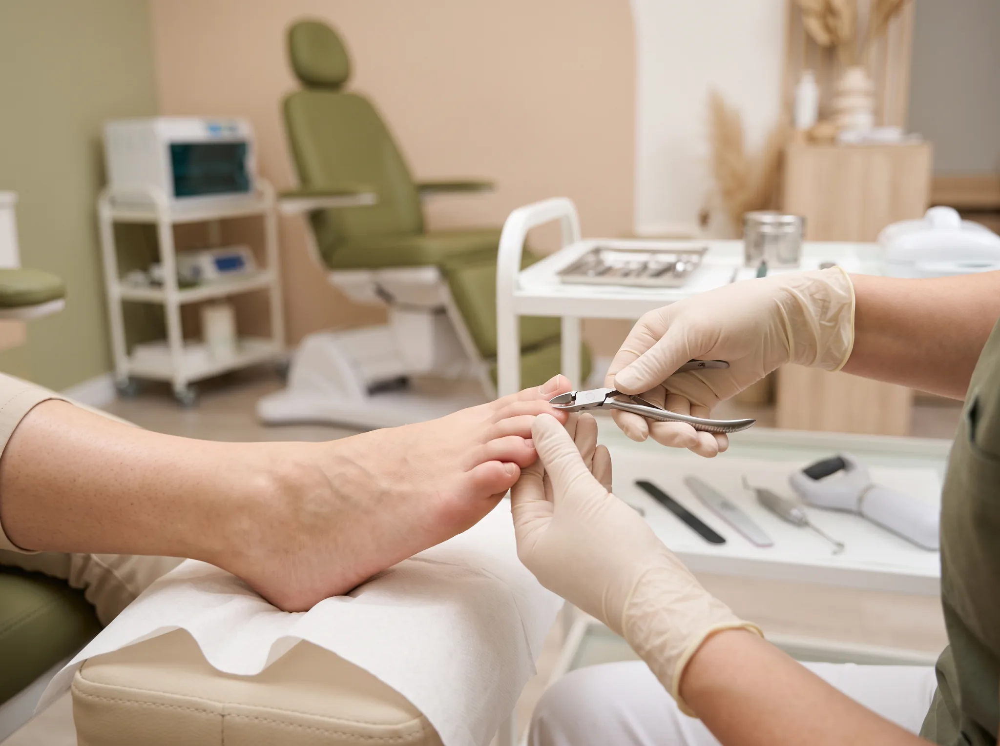
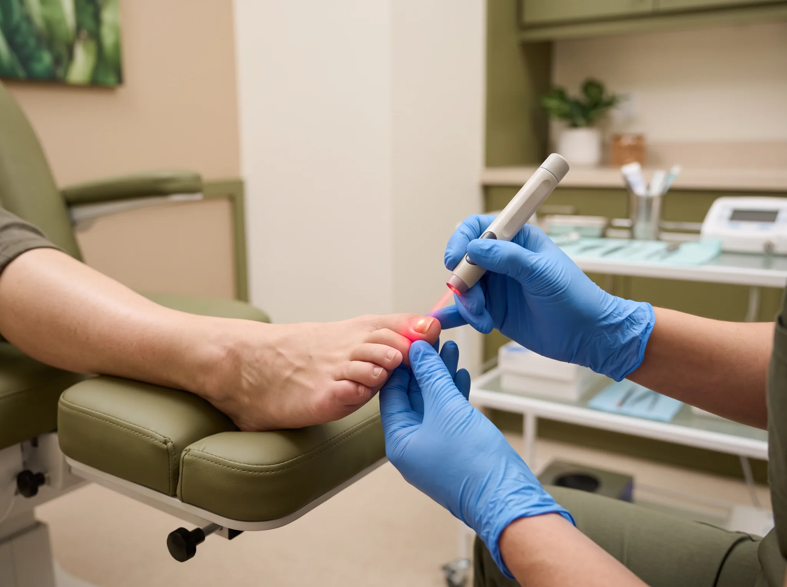
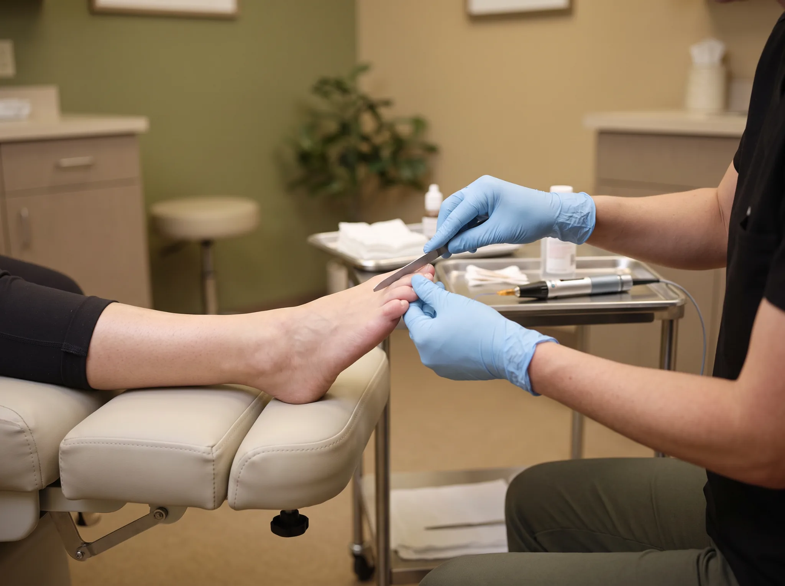
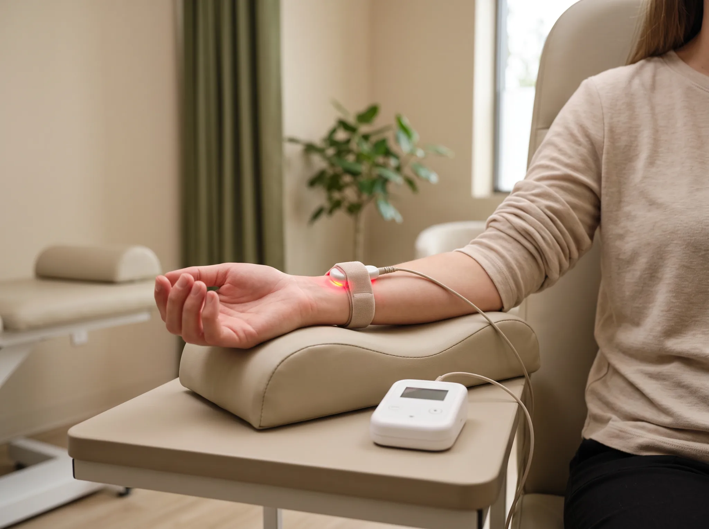
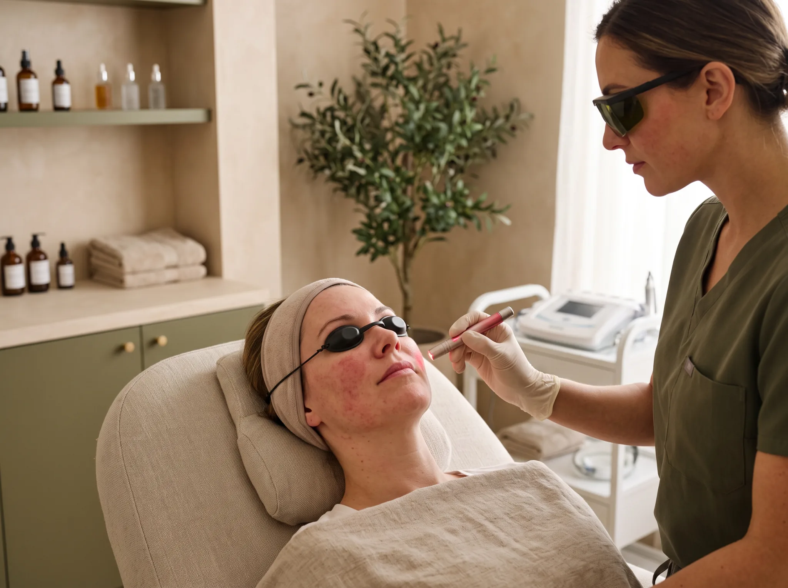

Cuidamos dos seus pés e unhas com técnica, tecnologia e carinho. Da limpeza completa ao tratamento de fungos com laser, cada atendimento começa com uma avaliação individual.

Explicamos tudo com clareza: o que é, como é feito e para quem é indicado.
É o cuidado completo dos pés feito por profissional de podologia. Fazemos o corte correto das unhas, a limpeza dos cantos, a remoção de calos e calosidades (quando houver), a higienização e a hidratação.
Ideal para manter os pés saudáveis, prevenir unhas encravadas e caminhar com mais conforto.

Onicomicose é a micose de unha: uma infecção por fungos que deixa a unha amarelada, grossa, quebradiça ou descolada. O laser de baixa potência atua diretamente na unha afetada, ajudando a eliminar o fungo de forma segura e sem dor.
O tratamento requer acompanhamento e regularidade. A continuidade das sessões é importante para acompanhar a evolução e ajustar o tratamento conforme a resposta de cada pessoa.

Primeiro preparamos a unha afetada: limpeza e desbaste da lâmina comprometida pelo fungo. Em seguida aplicamos o laser. Com a unha preparada, a luz alcança melhor a área infectada e o tratamento rende mais.
É indicado para quem quer começar o tratamento da onicomicose da forma mais eficiente.

A ILIB utiliza a luz do laser de baixa intensidade e a luz infravermelha para estimular o organismo, promovendo melhora na circulação sanguínea, redução de inflamações e aceleração da cicatrização. Traz benefícios sistêmicos e locais.
Na podologia é indicada como terapia complementar no tratamento de diversas alterações. É segura, indolor e não invasiva.
Estimula a oxigenação dos tecidos e a microcirculação.
Reduz processos inflamatórios e auxilia na recuperação.
Favorece a regeneração dos tecidos e acelera a recuperação.
Ajuda no controle da dor, desconfortos e na recuperação muscular.
Aumenta a produção de células de defesa e ajuda a combater fungos e bactérias.
Melhora o efeito dos tratamentos podológicos, como o laser para onicomicose.
Combate o cansaço e a fadiga, melhorando o bem-estar geral.
Estimula a regeneração celular e melhora a aparência da pele.

A rosácea é uma condição inflamatória crônica da pele que causa vermelhidão, sensibilidade, vasinhos e, em alguns casos, pápulas e lesões. Cada pele é única, por isso o tratamento é individualizado.
Laser pontual: atua diretamente nos pontos mais sensíveis, ajudando a reduzir a inflamação, a vermelhidão e a reatividade vascular.
ILIB: estimula a circulação e o metabolismo celular, favorecendo a cicatrização e a oxigenação dos tecidos. A combinação potencializa os resultados de forma segura e progressiva.
Histórico de saúde, medicamentos, alergias e características da pele. Fotos e checagem de contraindicações.
Limpeza com produtos para pele sensível, sem fragrância. Sem esfoliação ou extrações.
Aplicação nos pontos indicados, com proteção ocular e monitoramento do conforto.
Terapia na modalidade indicada (transcutânea ou intravascular), seguindo os protocolos de segurança.
Hidratante suave e orientação de protetor solar diário (FPS 30 ou mais) e cuidados em casa.
Comece por aqui.
Limpeza completa dos pés, corte e cuidado das unhas, higienização e hidratação.
Tudo da podoprofilaxia completa, mais a remoção cuidadosa de calos e calosidades para caminhar com alívio.
Preparação das duas unhas afetadas (limpeza e desbaste) seguida da aplicação do laser, que age melhor na unha preparada.
Laser de baixa potência em duas unhas com onicomicose. Indolor e seguro, com resultados gradativos.
Laser em uma unha com onicomicose. Ideal para começar quando só uma unha está afetada.
O número de sessões e a indicação do tratamento são definidos após avaliação. Faltas ou interrupções podem comprometer o resultado, que também varia conforme o grau da infecção e os cuidados em casa.
Fale com a gente pelo WhatsApp e escolha o melhor horário. Cuidar dos seus pés também é saúde.